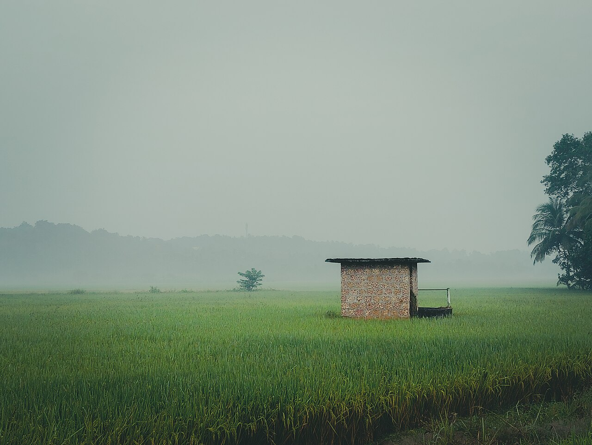
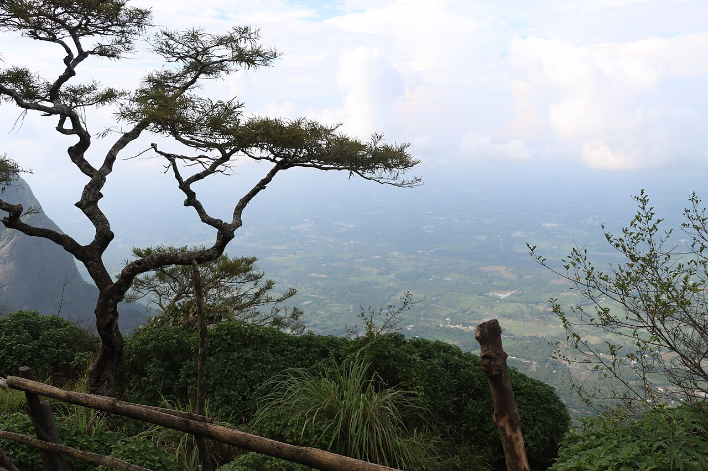
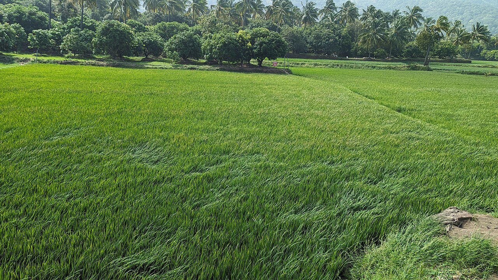
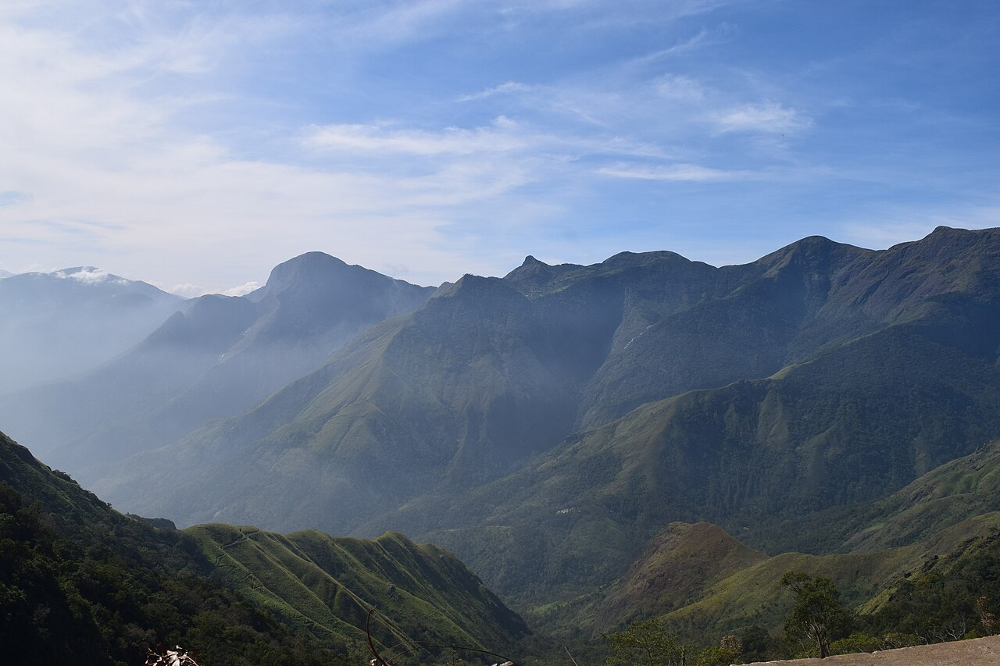
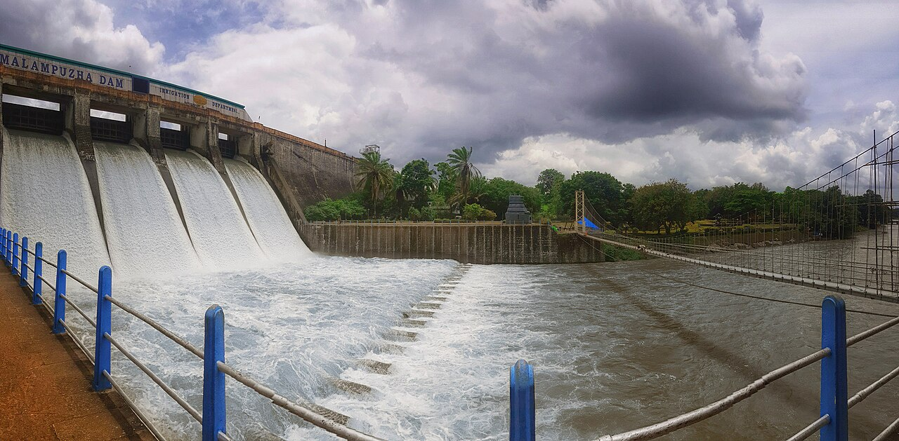
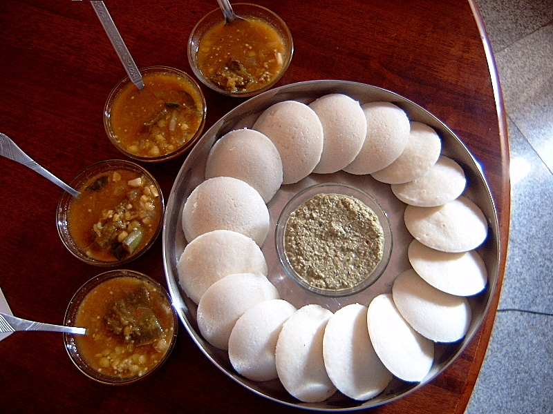
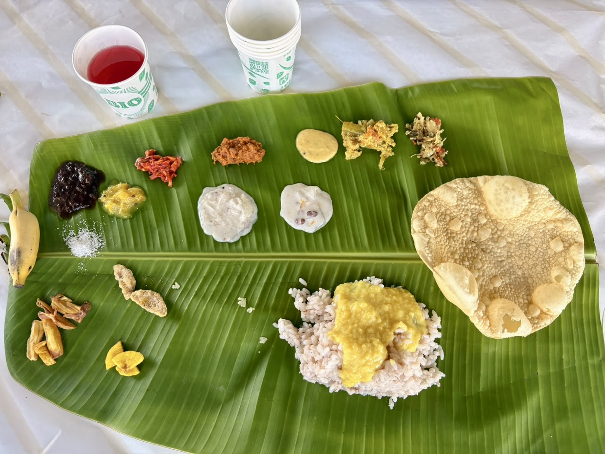
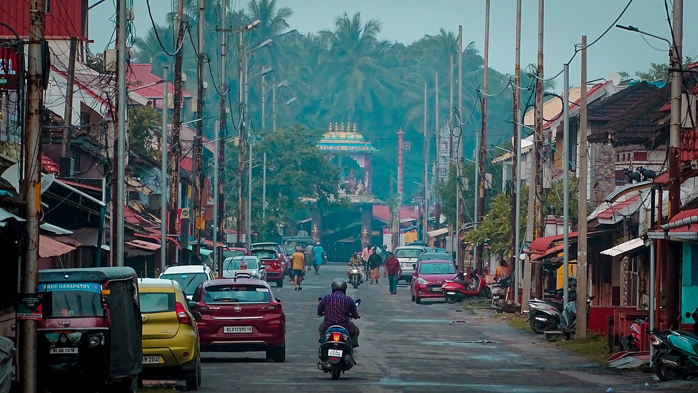
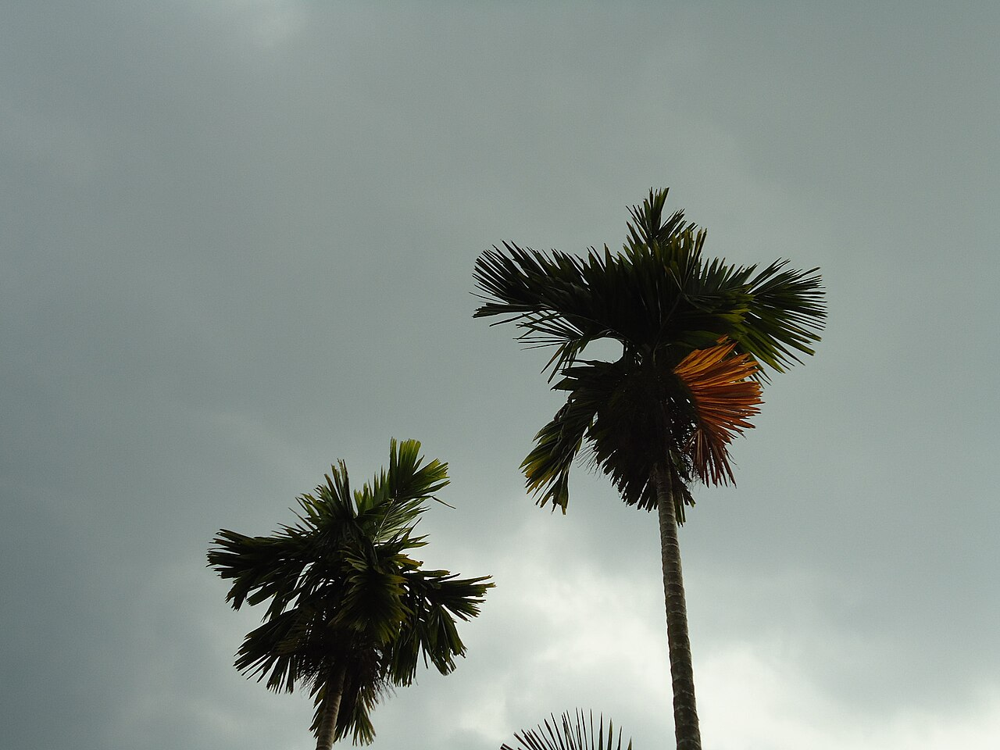

Field Travelogue • Palakkad District, Kerala
Where the Western Ghats Part and Paddy Fields Whisper.
A slow traveler’s field notes from the Gateway of Kerala. From the primal mist of Silent Valley and the 30 hairpin bends of Nelliyampathy, to 200-year-old earthen-pot Ramassery idlis and centuries of Kalpathy heritage.

32-km Natural Gap
The monumental break in the Western Ghats connecting Kerala & Deccan.
The Rice Bowl
Over 80,000 hectares of GI-tagged Palakkad Matta paddy.
Silent Valley
India’s last undisturbed tropical evergreen rainforest biosphere.
200-Year Steam
Ancient clay-pot culinary secret in Ramassery village.
Natural Wonders
The Breathtaking Beauty of Palakkad
A visual tribute to the pristine valleys, cascading streams, centuries-old granaries, and majestic mountain walls of the Western Ghats.




Curated Field Map
Pick a Landscape across Palakkad
Featured Field Journal
Chasing Mist on 30 Hairpins: Rising to Nelliyampathy
📍 Route: Nenmara → Pothundi → Kaikatty → SeethargunduWe caught the 6:15 AM red KSRTC bus out of Nenmara. As the old diesel engine roared into the first of thirty hairpin curves, the heat of the plains gave way to wild cardamom scent and cold cloud banks.
Interactive Trip Calculator
Estimate Your Real Route & Budget
Select your timeframe and preferred travel style to see realistic transit steps, forest fees, and day-by-day itineraries across Palakkad.
- Transport & Fuel: ₹950
- Stay & Homestays: ₹1,600
- Meals & Street Tea: ₹750
- Forest Permits & Passes: ₹150
2-Day Misty Ghats & Rural Palakkad
The traveler favorite: climb through 30 hairpin turns to Nelliyampathy on Day 1, and wander heritage villages and forts on Day 2.
Culinary & Living Heritage
Flavours of the Granary
Palakkad’s culinary traditions are shaped by its unique agricultural abundance, Tamil-Brahmin migrations, and centuries of indigenous wood-fired techniques.

Ramassery Idli
Steamed on unglazed porous earthenware pots draped in unbleached cotton netting over tamarind firewood. Unbelievably soft, lasting 3–4 days without spoiling.

Palakkad Matta Rice & Sadya
Nutrient-dense rose-colored parboiled rice with geographical indication (GI) status. Served boiling hot with freshly grated coconut chammanthi, curries, and crispy roasted papad.

Molagootal & Kalan
Centuries-old vegetarian delicacy from Kalpathy’s Brahmin households made with ash gourd, lentils, coconut, and cumin, accompanied by slow-simmered spiced yogurt Kalan.

Palmyra Nungu & Elaneer
Translucent ice-apples harvested fresh from towering Palmyra palms (Karimpana), and chilled tender coconut nectar blended with crushed ice and cardamom.
Geological Phenomenon
The Palakkad Gap: Nature’s Ancient Highway
Stretching 32 to 40 kilometers between the Nilgiri Hills to the north and the Anamalai Hills to the south, the Palakkad Gap is the only major low-elevation pass through the towering Western Ghats chain.
For thousands of years, this geological break allowed monsoon winds from the Arabian Sea to penetrate into the Deccan plateau, enabled Chera kings and Tipu Sultan to march armies, and allowed Tamil and Malayalam traditions to intertwine seamlessly.
32–40 km
Width of the low-pass breach in the Western Ghats mountain wall.
140 m
Average elevation of the pass floor, compared to 2,000m peaks on either side.
30–45 km/h
Continuous wind velocity funneling through Kanjikode during peak months.
Bilingual
Unique cultural fusion of Tamil and Malayalam language, music, and cuisine.
Receive the Next Palakkad Field Dispatch
Real routes, seasonal bus updates, waterfall reports, and honest cost sheets delivered once a month.